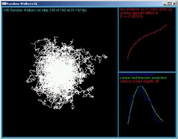
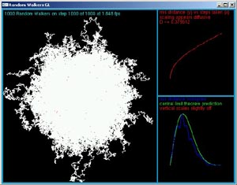
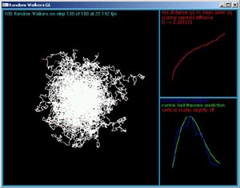
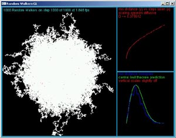

randwalkgl
This program was written for a modelling and simulations class. The program runs a bunch of random walkers and calculates their average distance, diffusion constant and distance distribution. The program is written in ANSI C and uses GLUT for graphics in order to maximize cross system compatability.
complete source - randwalkgl.c
 


